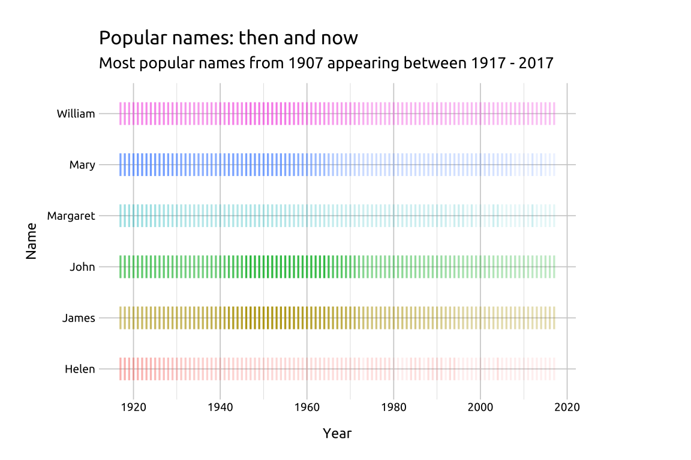
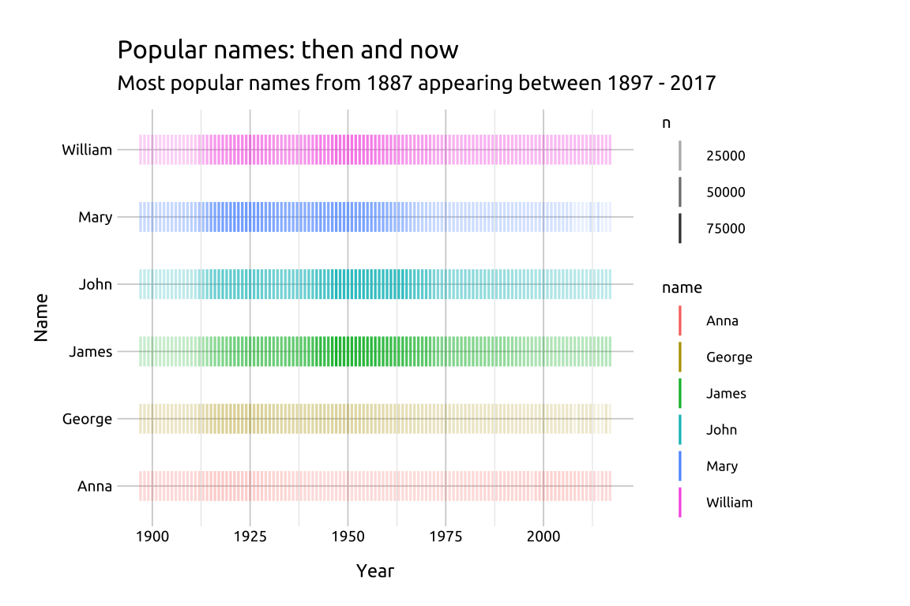
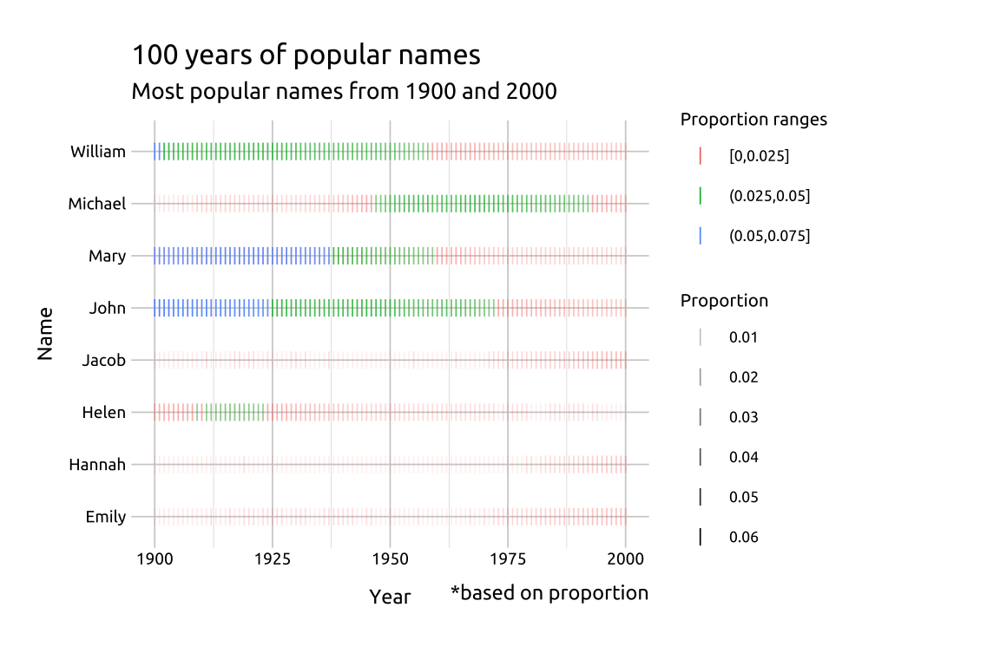
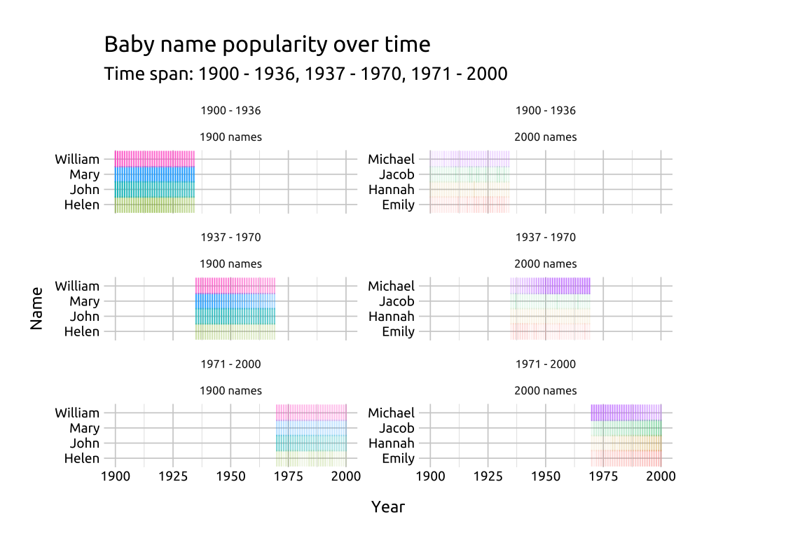

Instance chart
Description
An instance chart (or instance graph) displays frequencies (or ‘instances’) of different categorical values over time time.
The time dimension is placed on the x and each separate categorical item is placed on the y-axis. The instances are typically represented using the vertical hashes from geom_point() (i.e., shape 124 or the ‘pipe’ "|").
Saturation and color are also used to represent different categorical levels and counts.
Getting set up
DATA:
Filter the babynames::babynames to only those names in 1887, then group by name and sex, arrange descending by the n, and store only the top 6 names in top_bby_nms_1887.
Use the names from top_bby_nms_1887 to filter babynames::babynames for names after 1897 and store in popular_bby_nms.
Code
The grammar
CODE:
Create labels with labs()
Initialize the graph with ggplot() and provide data
Map year to x, name to y, and color to name
Add geom_point(), map n to alpha, and set the shape to 124 and size to 5
Code
labs_inst_pop_nms <- labs(
title = "Popular names: then and now",
subtitle = "Most popular names from 1887 appearing between 1897 - 2017",
x = "Year",
y = "Name")
ggp2_inst_pop_nms <- ggplot(data = popular_bby_nms,
mapping = aes(x = year,
y = name,
color = name)) +
geom_point(aes(alpha = n),
shape = 124,
size = 5)
ggp2_inst_pop_nms +
labs_inst_pop_nmsGRAPH:

More info
Info
Code
top_nms_prop_1900 <- babynames::babynames |>
dplyr::filter(year == 1900) |>
dplyr::group_by(sex, name) |>
dplyr::summarise(max_prop = max(prop)) |>
dplyr::slice_max(n = 2, order_by = max_prop) |>
dplyr::ungroup()
top_nms_prop_1900
top_nms_prop_2000 <- babynames::babynames |>
dplyr::filter(year == 2000) |>
dplyr::group_by(sex, name) |>
dplyr::summarise(max_prop = max(prop)) |>
dplyr::slice_max(n = 2, order_by = max_prop) |>
dplyr::ungroup()
top_nms_prop_2000
nms_1900 <- top_nms_prop_1900[["name"]]
nms_2000 <- top_nms_prop_2000[["name"]]
top_nms_1900_2000 <- c(nms_1900, nms_2000)
popular_bby_nms_prop <- babynames::babynames |>
dplyr::filter(name %in% top_nms_1900_2000 &
year >= 1900 &
year <= 2000) |>
dplyr::mutate(
# proportion range
prop_range = ggplot2::cut_interval(x = prop,
length = 0.025),
group = case_when(
name %in% nms_1900 ~ "1900 names",
name %in% nms_2000 ~ "2000 names",
TRUE ~ NA_character_),
group = factor(group,
levels = c("1900 names",
"2000 names")))Graph details
Code
labs_inst_pop_nms_prop <- labs(
title = "100 years of popular names",
subtitle = "Most popular names from 1900 and 2000",
caption = "*based on proportion",
x = "Year", y = "Name",
color = "Proportion ranges", alpha = "Proportion")
ggp2_inst_pop_nms_prop <- ggplot(data = popular_bby_nms_prop,
mapping = aes(x = year,
y = name,
color = prop_range)) +
geom_point(aes(alpha = prop),
shape = 124,
size = 2.5)
ggp2_inst_pop_nms_prop +
labs_inst_pop_nms_prop 
Info
We’ll create two
Code
popular_bby_nms_fct <- popular_bby_nms_prop |>
dplyr::mutate(
# year range
year_range = ggplot2::cut_number(year,
n = 3,
labels = FALSE,
ordered_result = TRUE),
year_range = case_when(
year_range == 1 ~ "1900 - 1936",
year_range == 2 ~ "1937 - 1970",
year_range == 3 ~ "1971 - 2000"),
year_range = factor(year_range,
levels = c("1900 - 1936",
"1937 - 1970",
"1971 - 2000"),
ordered = TRUE))
glimpse(popular_bby_nms_fct)
#> Rows: 1,412
#> Columns: 8
#> $ year <dbl> 1900, 1900, 1900, 1900, 1900, 1900, 190…
#> $ sex <chr> "F", "F", "F", "F", "F", "F", "M", "M",…
#> $ name <chr> "Mary", "Helen", "Emily", "Hannah", "Jo…
#> $ n <int> 16706, 6343, 626, 325, 46, 44, 9829, 85…
#> $ prop <dbl> 0.05257559, 0.01996211, 0.00197009, 0.0…
#> $ prop_range <fct> "(0.05,0.075]", "[0,0.025]", "[0,0.025]…
#> $ group <fct> 1900 names, 1900 names, 2000 names, 200…
#> $ year_range <ord> 1900 - 1936, 1900 - 1936, 1900 - 1936, …Code
# create labels from factor levels
st_lbls <- paste0(levels(popular_bby_nms_fct$year_range), collapse = ", ")
labs_inst_pop_nms_facet <- labs(
title = "Baby name popularity over time",
subtitle = paste0("Time span: ", st_lbls),
x = "Year",
y = "Name")
ggp2_inst_pop_nms_facet <- ggplot(popular_bby_nms_fct,
mapping = aes(x = year,
y = name)) +
geom_point(aes(alpha = prop, color = name),
shape = "|",
size = 3,
show.legend = FALSE) +
facet_wrap(year_range ~ group,
scales = "free_y", ncol = 2)
ggp2_inst_pop_nms_facet +
labs_inst_pop_nms_facet